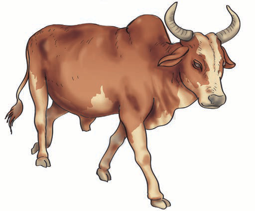
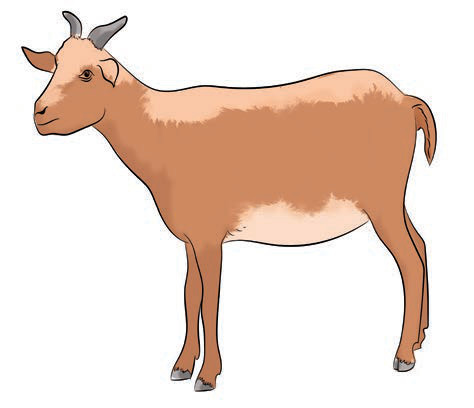

Kuigiza sauti za viumbe hai
Viumbe hai hutumia sauti kuwasiliana katika mazingira yao. Angalia picha za wanyama na ndege katika Kielelezo namba 2, kisha igiza sauti zao.


4
Viumbe hai hutumia sauti kuwasiliana katika mazingira yao. Angalia picha za wanyama na ndege katika Kielelezo namba 2, kisha igiza sauti zao.

